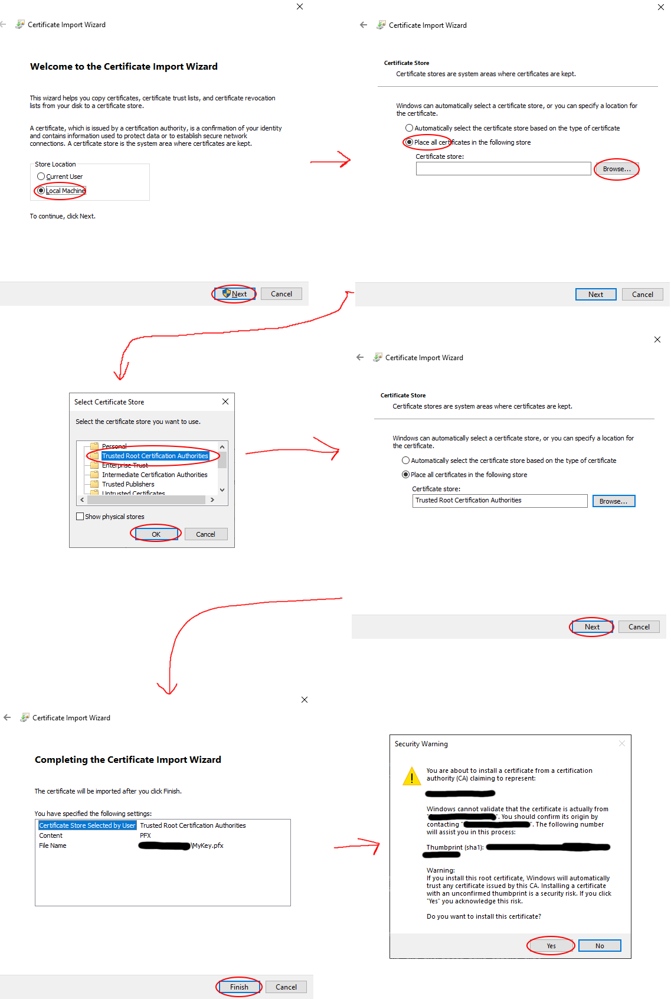
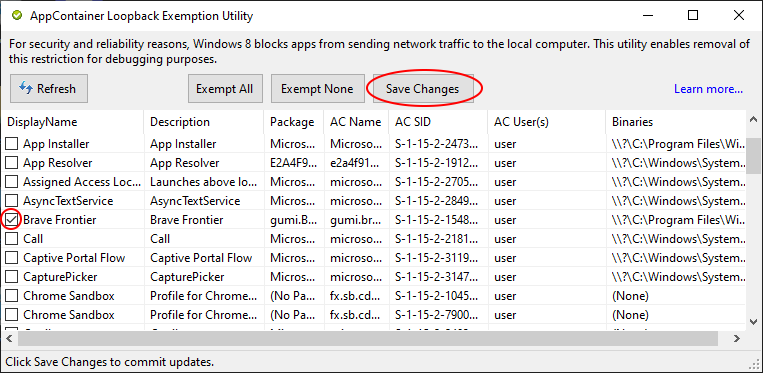

Setting up a development game client (Windows 8.1+)¶
Requirements¶
Visual Studio or Visual Studio build tools installed in the system
A copy of the Brave Frontier package (APPX) for Windows (Microsoft Store link)
Developer mode installed
Warning
If the developer mode is not installed or enabled in Windows, the proxy will not work and you will not see the command prompt
Cloning the repo¶
- Clone the server repository:
git clone –depth=1 https://github.com/decompfrontier/server
Building the proxy¶
Warning
The client is supported ONLY in 32-bit platforms. Make sure to use the MINGW32 (i686-w64-mingw32) toolchain
Using cmake, configure the proxy to use either debug-vs if you are using Visual Studio as your compiler or debug-mingw if you are using MSYS/MinGW as your compiler. (cmake –preset debug-vs or debug-mingw)
After you’ve completed the compilation, you should see inside your cmake build directory a bin folder, inside that folder you should find a libcurl.dll.
Keep track of that file as it’s going to be required later for the tutorial.
Generating the UWP development certificates¶
Warning
It is recommended that you remove this certificates when they are no longer necessary to prevent them from being used to compromise system trust.
Important
All the following commands are executed in a Powershell, please make sure to execute one otherwise the system won’t be able to find the required applications.
Info
If you have already generated a PFX certificate before for deploying applications to the Windows Store, or you have already followed up this part of the tutorial, skip directory to the Modifying Brave Frontier APPX section.
Info
This section contains a simplified step adopted from the following page in MSDN
In order to install custom Windows Store apps, one should first generate a development certificate to allow the installation.
Run the following command to create a certificate:
New-SelfSignedCertificate -Type Custom -Subject “CN=<Name>” -KeyUsage DigitalSignature -FriendlyName “Your friendly name goes here” -CertStoreLocation “Cert:\CurrentUser\My” -TextExtension @(“2.5.29.37={text}1.3.6.1.5.5.7.3.3”, “2.5.29.19={text}”)
Info
Replace <Name> with any name you want (like My BraveFrontier) and write down this name, it’s going to be required later in the tutorial.
Remember the Thumbprint as it’s going to be used to export the certificate.
Run the following commands to export the certificate:
$password = ConvertTo-SecureString -String <Your Password> -Force -AsPlainText
Export-PfxCertificate -cert “Cert:\CurrentUser\My\<Certificate Thumbprint>” -FilePath MyKey.pfx -Password $password
Info
Replace <Your Password> with a possibly strong password.
Replace <Certificate Thumbprint> with the Thumbprint shown before.
You should now have a MyKey.pfx file, keep track of this file as this is the certificate that we’re going to use to sign our hacked Brave Frontier client.
Installing the certificate¶
Open your MyKey.pfx file this will bring the Certificate Import Wizard.
Select Local Machine, then go next up to the certificate store, you have to select Place all certificates in the following store, browse a store and select Trusted Root Certification Authorities, then press Finish and then Yes.
Modifying Brave Frontier APPX¶
Important
All the following commands are executed in a Developet command prompt for VS, please make sure to execute one otherwise the system won’t be able to find the required applications.
Run the following command to unpack the game client:
makeappx unpack /p gumi.BraveFrontier_2.19.6.0_x86__tdae4wqex79w6.appx /d BraveFrontierAppxClient
A new folder called BraveFrontierAppxClient should be created now, this folder contains the extracted game client that we’re going to modify.
Copy the file libcurl.dll from the previous part of the tutorial and place it in the root of the BraveFrontierAppxClient directory, when asked to replace the original file say Yes.
Remove the following files from the BraveFrontierAppxClient directory:
AppxMetadata
AppxSignature.p7x
AppxBlockMap.xml
ApplicationInsights.config
Open the file AppxManifest.xml with any text editor (like Notepad++) and search for the following string:
<Identity Name=”gumi.BraveFrontier” Publisher=”CN=5AA816A3-ED94-4AA2-A2B4-3ADDA1FABFB6” Version=”2.19.6.0” ProcessorArchitecture=”x86” />
Replace the part CN=5AA816A3-ED94-4AA2-A2B4-3ADDA1FABFB6 with CN=<Name>, this name has to match the exact name that you used during the certificate generation process, otherwise the application will not install.
You can also modify, if you want, the Properties tag to change the display of the application (like display name or publisher) by modifying this part of the file:
- <Properties>
<DisplayName>Brave Frontier</DisplayName>
<PublisherDisplayName>株式会社gumi</PublisherDisplayName>
<Logo>AssetsStoreLogo.png</Logo>
</Properties>
If you want to modify the name of the application that you will see in the Windows start menu, modify this DisplayName tag:
<m2:VisualElements DisplayName=”Brave Frontier”
Save and close this file, then run the following commands to pack and sign the modified client:
makeappx pack /d BraveFrontierAppxClient /p BraveFrontierPatched.appx
SignTool sign /a /v /fd SHA256 /f MyKey.pfx /p “<Your Password>” BraveFrontierPatched.appx
Note
Replace <Your Password> with the password used before for exporting the certificate
Running the game¶
Install the newly generated file BraveFrontierPatched.appx` and run the client, if you have done all the steps correctly, a console should spawn alongside the game client like so:

Failure
If you don’t see a console opening, it means that you have either not installed the patched libcurl.dll or you have generated the deploy preset, which is not supported in this build.
You will also not see the console opening if you haven’t enabled Developer mode on your Windows PC.
Connecting to the server¶
A default limitation in UWP apps won’t allow UWP apps to communicate to localhost resulting in the game never connecting to the server.
You can solve this by downloading the Enable Loopback Utility , select the Brave Frontier application.
The utility should be configured like so, remember to press Save Changes and restart the game.
If you have started the game server, you should see Brave Frontier welcoming you to the login screen.